Analysis
Data Analytics
18/07/2020
Last updated: 2020-07-19
Checks: 6 1
Knit directory: 20200707_coffee/
This reproducible R Markdown analysis was created with workflowr (version 1.6.2). The Checks tab describes the reproducibility checks that were applied when the results were created. The Past versions tab lists the development history.
Great! Since the R Markdown file has been committed to the Git repository, you know the exact version of the code that produced these results.
Great job! The global environment was empty. Objects defined in the global environment can affect the analysis in your R Markdown file in unknown ways. For reproduciblity it’s best to always run the code in an empty environment.
The command set.seed(20200718) was run prior to running the code in the R Markdown file. Setting a seed ensures that any results that rely on randomness, e.g. subsampling or permutations, are reproducible.
Great job! Recording the operating system, R version, and package versions is critical for reproducibility.
- session-info-chunk-inserted-by-workflowr
- unnamed-chunk-1
- unnamed-chunk-10
- unnamed-chunk-11
- unnamed-chunk-12
- unnamed-chunk-13
- unnamed-chunk-14
- unnamed-chunk-15
- unnamed-chunk-16
- unnamed-chunk-2
- unnamed-chunk-3
- unnamed-chunk-4
- unnamed-chunk-5
- unnamed-chunk-6
- unnamed-chunk-7
- unnamed-chunk-8
- unnamed-chunk-9
To ensure reproducibility of the results, delete the cache directory analysis_cache and re-run the analysis. To have workflowr automatically delete the cache directory prior to building the file, set delete_cache = TRUE when running wflow_build() or wflow_publish().
Great job! Using relative paths to the files within your workflowr project makes it easier to run your code on other machines.
Great! You are using Git for version control. Tracking code development and connecting the code version to the results is critical for reproducibility.
The results in this page were generated with repository version 079cc48. See the Past versions tab to see a history of the changes made to the R Markdown and HTML files.
Note that you need to be careful to ensure that all relevant files for the analysis have been committed to Git prior to generating the results (you can use wflow_publish or wflow_git_commit). workflowr only checks the R Markdown file, but you know if there are other scripts or data files that it depends on. Below is the status of the Git repository when the results were generated:
Ignored files:
Ignored: .Rproj.user/
Ignored: analysis/analysis_cache/
Note that any generated files, e.g. HTML, png, CSS, etc., are not included in this status report because it is ok for generated content to have uncommitted changes.
These are the previous versions of the repository in which changes were made to the R Markdown (analysis/analysis.Rmd) and HTML (docs/analysis.html) files. If you’ve configured a remote Git repository (see ?wflow_git_remote), click on the hyperlinks in the table below to view the files as they were in that past version.
| File | Version | Author | Date | Message |
|---|---|---|---|---|
| html | 079cc48 | sciencificity | 2020-07-19 | Build site. |
| Rmd | 8c0131d | sciencificity | 2020-07-19 | Added more to the analysis, including summarised models |
| html | 8c0131d | sciencificity | 2020-07-19 | Added more to the analysis, including summarised models |
| html | be397a8 | sciencificity | 2020-07-18 | Build site. |
| Rmd | bd92127 | sciencificity | 2020-07-18 | Add start of code along analysis |
Coffee Ratings
coffee <- read_csv('https://raw.githubusercontent.com/rfordatascience/tidytuesday/master/data/2020/2020-07-07/coffee_ratings.csv') %>%
filter(total_cup_points > 0)coffee %T>%
View() %>%
count(species, sort = TRUE)# A tibble: 2 x 2
species n
<chr> <int>
1 Arabica 1310
2 Robusta 28coffee %>%
count(species, variety, sort = TRUE)# A tibble: 33 x 3
species variety n
<chr> <chr> <int>
1 Arabica Caturra 255
2 Arabica Bourbon 226
3 Arabica Typica 211
4 Arabica <NA> 201
5 Arabica Other 108
6 Arabica Catuai 74
7 Arabica Hawaiian Kona 44
8 Arabica Yellow Bourbon 35
9 Arabica Mundo Novo 33
10 Robusta <NA> 25
# ... with 23 more rowscoffee %>%
filter(!is.na(variety)) %>%
count(variety, sort = TRUE) %>%
head(12)# A tibble: 12 x 2
variety n
<chr> <int>
1 Caturra 255
2 Bourbon 226
3 Typica 211
4 Other 110
5 Catuai 74
6 Hawaiian Kona 44
7 Yellow Bourbon 35
8 Mundo Novo 33
9 Catimor 20
10 SL14 17
11 SL28 15
12 Pacas 13# To avoid the head() call use fct_lump(colA, #num_you_want)
coffee %>%
filter(!is.na(variety)) %>%
count(variety = fct_lump(variety, 12),
sort = TRUE) # A tibble: 12 x 2
variety n
<fct> <int>
1 Caturra 255
2 Bourbon 226
3 Typica 211
4 Other 169
5 Catuai 74
6 Hawaiian Kona 44
7 Yellow Bourbon 35
8 Mundo Novo 33
9 Catimor 20
10 SL14 17
11 SL28 15
12 Pacas 13coffee %>%
filter(!is.na(variety)) %>%
count(species, variety, sort = TRUE) %>%
head(13)# A tibble: 13 x 3
species variety n
<chr> <chr> <int>
1 Arabica Caturra 255
2 Arabica Bourbon 226
3 Arabica Typica 211
4 Arabica Other 108
5 Arabica Catuai 74
6 Arabica Hawaiian Kona 44
7 Arabica Yellow Bourbon 35
8 Arabica Mundo Novo 33
9 Arabica Catimor 20
10 Arabica SL14 17
11 Arabica SL28 15
12 Arabica Pacas 13
13 Arabica Gesha 12# Has some unintended consequences if we have 2 things in count
# so best use one count if combining with fct_lump()
coffee %>%
filter(!is.na(variety)) %>%
count(species,
variety = fct_lump(variety, 12), sort = TRUE)# A tibble: 13 x 3
species variety n
<chr> <fct> <int>
1 Arabica Caturra 255
2 Arabica Bourbon 226
3 Arabica Typica 211
4 Arabica Other 166
5 Arabica Catuai 74
6 Arabica Hawaiian Kona 44
7 Arabica Yellow Bourbon 35
8 Arabica Mundo Novo 33
9 Arabica Catimor 20
10 Arabica SL14 17
11 Arabica SL28 15
12 Arabica Pacas 13
13 Robusta Other 3# How does variety effect the score? The total cup points?
coffee %>%
filter(!is.na(variety)) %>%
mutate(variety = fct_lump(variety, 12),
variety = fct_reorder(variety, total_cup_points)) %>%
ggplot(aes(total_cup_points, variety)) +
geom_boxplot()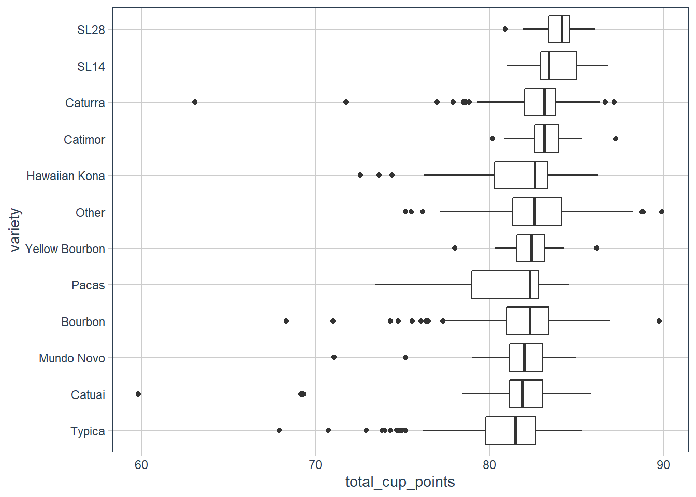
coffee_lumped <- coffee %>%
filter(!is.na(variety),
total_cup_points > 0) %>%
mutate(variety = fct_lump(variety, 12))
# Let's remove that 0 point
coffee_lumped %>%
mutate(variety = fct_reorder(variety, total_cup_points)) %>%
ggplot(aes(total_cup_points, variety)) +
geom_boxplot()
coffee_lumped %>%
ggplot(aes(total_cup_points, fill=variety)) +
geom_histogram(binwidth=2) +
facet_wrap(~ variety, scale="free_y") +
scale_fill_tq() +
theme(legend.position = "none")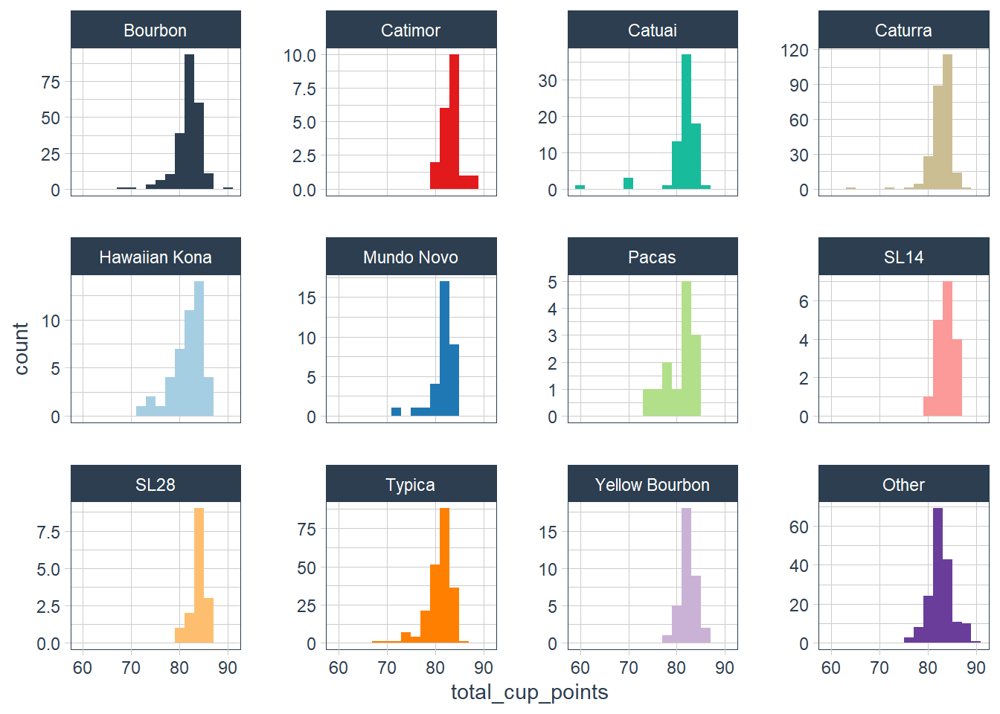
coffee %>%
# Let's see % values are missing from data
# Gives you a % complete basically 1.00 means 100% of obs present
summarise(across(everything(), ~mean(!is.na(.)))) %>%
# Let's us see it as a column
gather() %>%
# sort from complete data to less complete data
arrange(desc(value)) %T>%
View()# A tibble: 43 x 2
key value
<chr> <dbl>
1 total_cup_points 1
2 species 1
3 number_of_bags 1
4 bag_weight 1
5 in_country_partner 1
6 grading_date 1
7 aroma 1
8 flavor 1
9 aftertaste 1
10 acidity 1
# ... with 33 more rowscoffee %>%
count(producer, sort = TRUE) # Lots of missing producers# A tibble: 692 x 2
producer n
<chr> <int>
1 <NA> 231
2 La Plata 30
3 Ipanema Agrícola SA 22
4 Doi Tung Development Project 17
5 Ipanema Agricola 12
6 VARIOS 12
7 Ipanema Agricola S.A 11
8 ROBERTO MONTERROSO 10
9 AMILCAR LAPOLA 9
10 LA PLATA 9
# ... with 682 more rowscoffee %>%
count(company, sort = TRUE) # Lots missing here# A tibble: 282 x 2
company n
<chr> <int>
1 <NA> 209
2 unex guatemala, s.a. 86
3 ipanema coffees 50
4 exportadora de cafe condor s.a 40
5 kona pacific farmers cooperative 40
6 racafe & cia s.c.a 40
7 blossom valley<U+5BB8><U+5DA7><U+570B><U+969B> 25
8 carcafe ltda 25
9 nucoffee 24
10 taiwan coffee laboratory 20
# ... with 272 more rowscoffee %>%
count(color, sort = TRUE)# A tibble: 5 x 2
color n
<chr> <int>
1 Green 869
2 <NA> 218
3 Bluish-Green 114
4 Blue-Green 85
5 None 52coffee %>%
count(country = fct_lump(country_of_origin, 12), sort=TRUE) %>%
filter(!is.na(country)) %>%
mutate(country = fct_reorder(country, n)) %>%
ggplot(aes(n, country)) +
geom_col()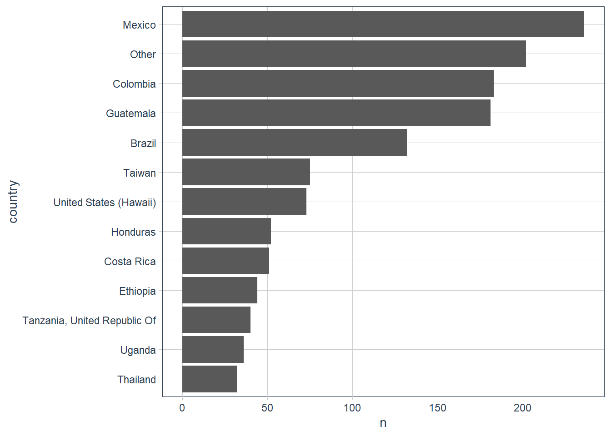
coffee %>%
filter(!is.na(country_of_origin),
(total_cup_points > 0)) %>%
mutate(country = fct_lump(country_of_origin, 12),
country = fct_reorder(country, total_cup_points)) %>%
ggplot(aes(total_cup_points, country)) +
geom_boxplot() 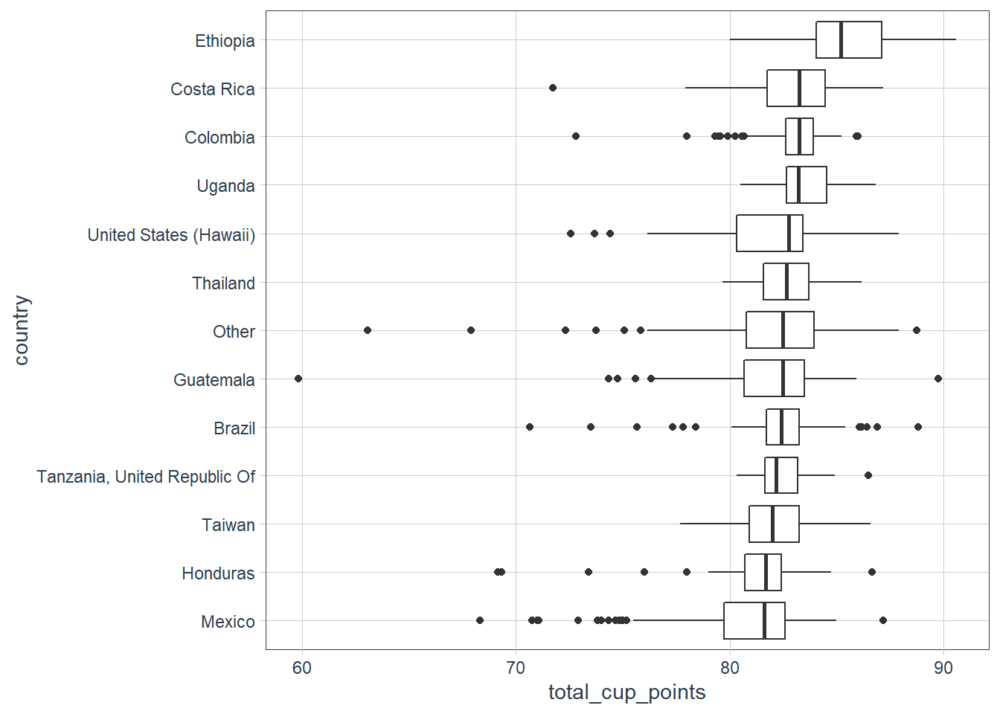
Interesting dimensions
# Do the individual aroma, sweetness etc. add up to the
# total_cup_points
coffee_metrics <- coffee %>%
filter(total_cup_points > 0) %>%
mutate(coffee_id = row_number()) %>%
select(coffee_id, total_cup_points, variety,
company, country_of_origin,
aroma:moisture) %>%
# pivot the cols aroma:moisture
# make the new col name = "metric"
# the value goes in "Value" aroma 8.67, flavor = 8.83 etc.
# we see that moisture does not seem to be in the total,
# so sum to cupper_points
pivot_longer(aroma:cupper_points,
names_to = "metric",
values_to = "value") # %>%
# group by the id, and the total_cup_points to check assumption
# that adding aroma:cupper_points scores gives the total_cup_points
# group_by(coffee_id, total_cup_points) %>%
# summarise(total = sum(value)) %>%
# # these line up well
# ggplot(aes(total_cup_points, total)) +
# geom_point()library(ggridges)
coffee_metrics %>%
mutate(metric = fct_reorder(metric, value)) %>%
ggplot(aes(value, metric)) +
geom_density_ridges()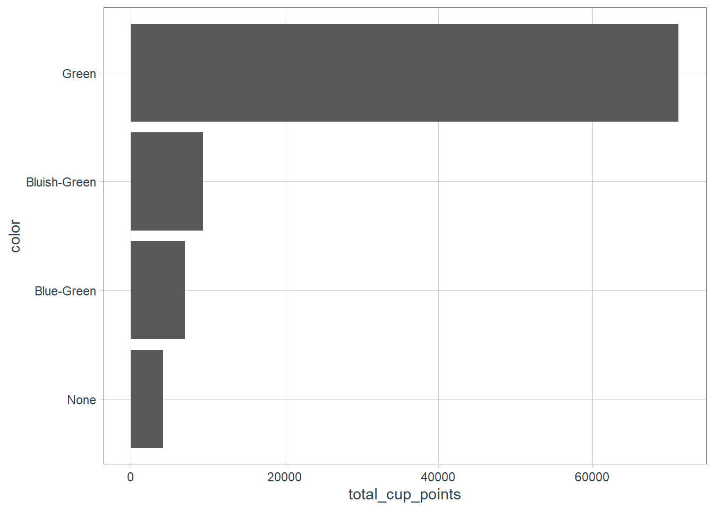
coffee_metrics %>%
group_by(metric) %>%
summarise(avg = mean(value),
sd = sd(value)) %>%
arrange(desc(avg))# A tibble: 10 x 3
metric avg sd
<chr> <dbl> <dbl>
1 sweetness 9.86 0.554
2 clean_cup 9.84 0.715
3 uniformity 9.84 0.485
4 aroma 7.57 0.316
5 acidity 7.54 0.319
6 flavor 7.53 0.341
7 balance 7.52 0.354
8 body 7.52 0.308
9 cupper_points 7.51 0.427
10 aftertaste 7.41 0.350Are any metrics correlated?
library(widyr)
correlations <- coffee_metrics %>%
# correlations among metrics, based on coffee_id, by value
pairwise_cor(metric, coffee_id, value, sort = TRUE)Sweetness and flavour are not correlated at all.
Let’s do a network graph, can we find clusters in the metrics.
library(ggraph)
library(igraph)
correlations %>%
head(50) %>%
graph_from_data_frame() %>%
ggraph() +
geom_edge_link(aes(edge_alpha = correlation)) +
geom_node_point() +
geom_node_text(aes(label = name), repel = TRUE)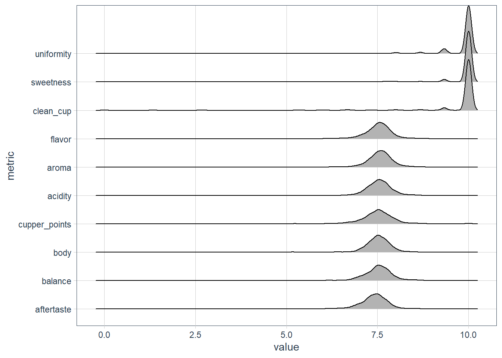
We see that there is one cluster with aroma, cupper_points, flavor etc. as one dense/tight cluster, and then further along we have the sweetness, clean_cup and uniformity as another cluster. These three came up in the ggridges plot, so it makes sense about these 2 clusters.
The suspicion is that PCA will find similar clusters? Let’s check it out. widely_svd is very similar to finding correlations, the difference is it returns the metric by dimension. We get the first dimension, second dimension etc. (single value decomposition).
library(tidytext)
coffee_metrics %>%
group_by(metric) %>%
mutate(centered = value - mean(value)) %>%
ungroup() %>%
# do single value decomp
widely_svd(metric, coffee_id, centered) %>%
# find the biggest variation in the data
filter(dimension <= 4) %>%
mutate(# reorder the metrics - metric by value within dimensions
metric = reorder_within(metric, value, dimension)) %>%
ggplot(aes(value, metric)) +
geom_col() +
scale_y_reordered() +
facet_wrap(~ dimension, scales = "free_y")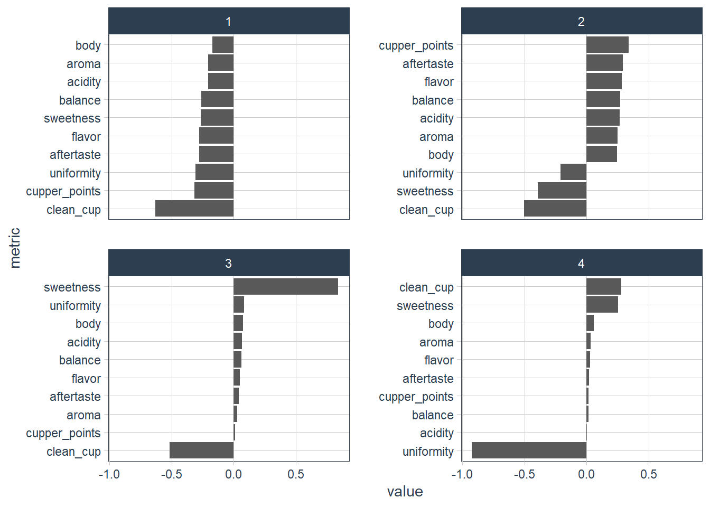
coffee_metrics %>%
# let's remove the one cluster of sweetness, clean_cup and uniformity
filter(!metric %in% c("sweetness", "clean_cup", "uniformity")) %>%
group_by(metric) %>%
mutate(centered = value - mean(value)) %>%
ungroup() %>%
# do single value decomp
widely_svd(metric, coffee_id, centered) %>%
# find the biggest variation in the data
filter(dimension <= 4) %>%
mutate(# reorder the metrics - metric by value within dimensions
metric = reorder_within(metric, value, dimension)) %>%
ggplot(aes(value, metric)) +
geom_col() +
scale_y_reordered() +
facet_wrap(~ dimension, scales = "free_y") 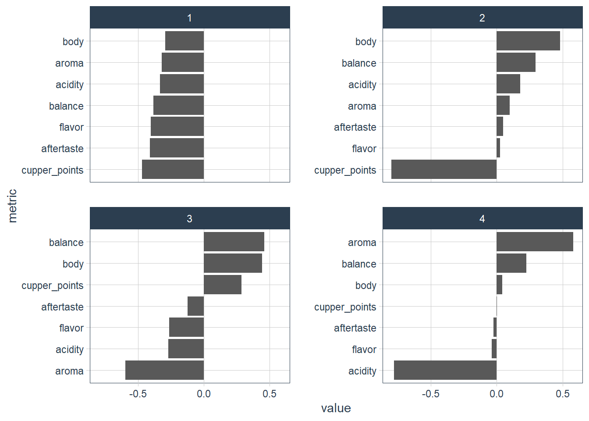
From the above we can maybe break down the body vs cupper_points of dimension 2, the balance vs aroma of dimension 3, the aroma vs acidity of dimension 4.
coffee_metrics %>%
# let's remove the one cluster of sweetness, clean_cup and uniformity
filter(!metric %in% c("sweetness", "clean_cup", "uniformity")) %>%
# do single value decomp
widely_svd(metric, coffee_id, value) %>%
# find the biggest variation in the data
filter(between(dimension, 2, 5)) %>%
mutate(# reorder the metrics - metric by value within dimensions
metric = reorder_within(metric, value, dimension)) %>%
ggplot(aes(value, metric)) +
geom_col() +
scale_y_reordered() +
facet_wrap(~ dimension, scales = "free_y") 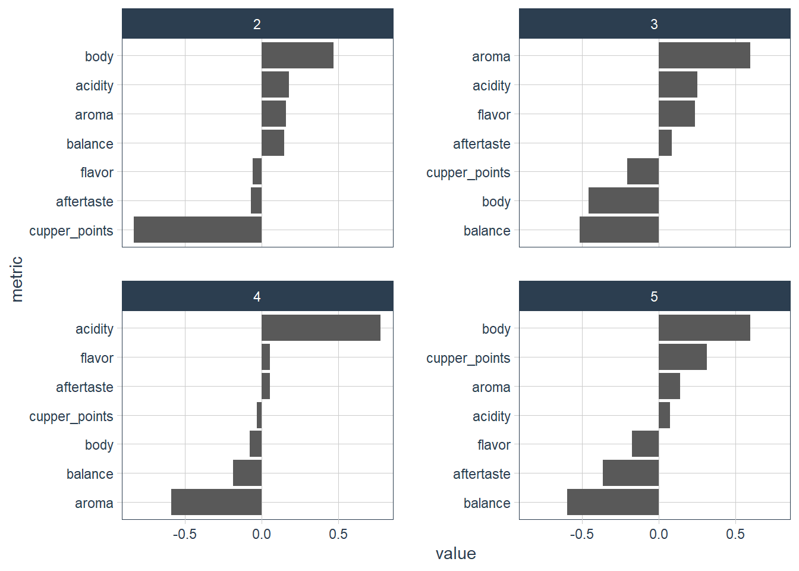
Which of these dimensions (after taste, aroma etc.) might associate with altitude, and which may not?
# Do the individual aroma, sweetness etc. add up to the
# total_cup_points
coffee_metrics2 <- coffee %>%
filter(total_cup_points > 0) %>%
mutate(coffee_id = row_number()) %>%
select(coffee_id, total_cup_points,
variety, altitude_mean_meters,
company, country_of_origin,
aroma:moisture, altitude) %>%
# pivot the cols aroma:moisture
# make the new col name = "metric"
# the value goes in "Value" aroma 8.67, flavor = 8.83 etc.
# we see that moisture does not seem to be in the total,
# so sum to cupper_points
pivot_longer(aroma:cupper_points,
names_to = "metric",
values_to = "value") # %>%
# group by the id, and the total_cup_points to check assumption
# that adding aroma:cupper_points scores gives the total_cup_points
# group_by(coffee_id, total_cup_points) %>%
# summarise(total = sum(value)) %>%
# # these line up well
# ggplot(aes(total_cup_points, total)) +
# geom_point()If we look at a histogram of the altitude we see some outliers. These may be parsing errors since coffee is not brewed 200000 meters above sea level. Mt Everest is 8,848 meters above mean sea level.
coffee_metrics2 %>%
ggplot(aes(altitude_mean_meters)) +
geom_histogram()
Let’s filter those mean altitudes below 10000. We still see there are a few outliers (long tail), with the beginning looking more normal (around 1000 meters).
coffee_metrics2 %>%
filter(altitude_mean_meters < 10000) %>%
ggplot(aes(altitude_mean_meters)) +
geom_histogram()
coffee %>%
filter(altitude_mean_meters >= 2000) %>%
select(altitude_mean_meters, altitude, country_of_origin) %T>%
View()# A tibble: 36 x 3
altitude_mean_meters altitude country_of_origin
<dbl> <chr> <chr>
1 2075 1950-2200 Ethiopia
2 2075 1950-2200 Ethiopia
3 2000 1800-2200 Ethiopia
4 2075 1950-2200 Ethiopia
5 2080 meters above sea level: 2.080 United States
6 2019 meters above sea level: 2.019 United States
7 2112 meters above sea level: 2.112 United States
8 2560 2.560 msnm Colombia
9 2136 2136 msnm Colombia
10 2000 2000 Kenya
# ... with 26 more rowsWe might be interested in the correlation between altitude and quality.
# Let's look at original coffee ds
coffee %>%
filter(altitude_mean_meters < 10000) %>%
# Cheat and make anything higher than 3000 stop at 3000
mutate(altitude_mean_meters =
pmin(altitude_mean_meters, 3000)) %>%
ggplot(aes(altitude_mean_meters, total_cup_points)) +
geom_point() +
geom_smooth(method = "lm")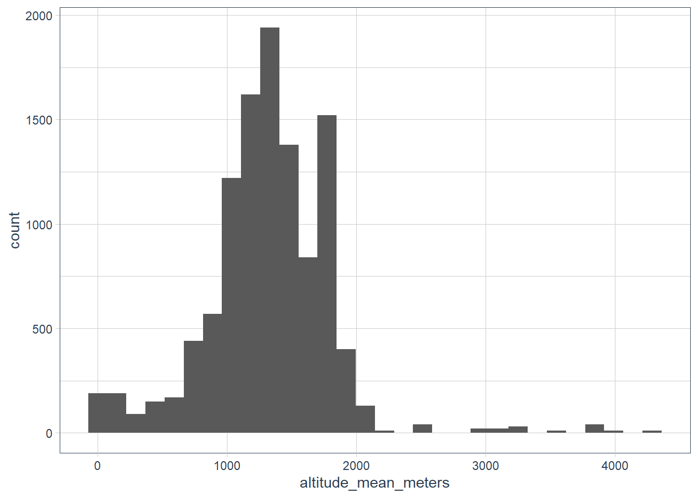
There is a correlation, but it is a low \(R^2\), i.e. the amount of variation in the total cup points that is explained by altitude is low. However it does look like higher altitudes have slightly higher cup points. So now what is the amount of correlation within each of those sources (e.g. aroma, body etc.).
coffee_metrics2 %>%
filter(altitude_mean_meters < 10000,
altitude != 1) %>%
mutate(altitude_mean_meters = pmin(altitude_mean_meters, 3000)) %>%
group_by(metric) %>%
summarise(correlation = cor(altitude_mean_meters, value)) %>%
arrange(desc(correlation))# A tibble: 10 x 2
metric correlation
<chr> <dbl>
1 acidity 0.201
2 balance 0.180
3 flavor 0.172
4 body 0.170
5 aroma 0.157
6 aftertaste 0.148
7 cupper_points 0.144
8 clean_cup 0.0633
9 uniformity 0.0621
10 sweetness 0.0101We see sweetness is not correlated, acidity has some correlation with altitude_mean_meters.
Let’s also build a model.
coffee_metrics2 %>%
filter(altitude_mean_meters < 10000,
altitude != 1) %>%
mutate(altitude_mean_meters = pmin(altitude_mean_meters, 3000),
km = altitude_mean_meters/1000 # scale in the val by making it in km
) %>%
group_by(metric) %>%
summarise(correlation = cor(altitude_mean_meters, value),
# summarise a model object by creating a list with a single lm
# value explained by altitude_mean_meters
model = list(lm(value ~ km))
) %>%
# Now let's tidy that list column, for each model apply broom's tidy
# We also want the confidence interval so pass broom::tidy that you
# are looking for that
mutate(tidied = map(model, broom::tidy, conf.int = TRUE)) %>%
# Now we have a statistical model for each of these value, altitude combos
# Slope and intercept
unnest(tidied) %>%
# Let's keep only the slope variable and drop intercept
filter(term == "km") %>%
ungroup() %>%
mutate(metric = fct_reorder(metric, estimate)) %>%
ggplot(aes(estimate, metric,
colour = p.value < .05)) +
geom_point() +
# Let's put some horizontal error bars showing the conf interval
geom_errorbarh(aes(xmin = conf.low,
xmax = conf.high),
height = .1) +
labs(x = "Each km contributes this much to the score (95% confidence int)",
y = "Evaluation of coffee")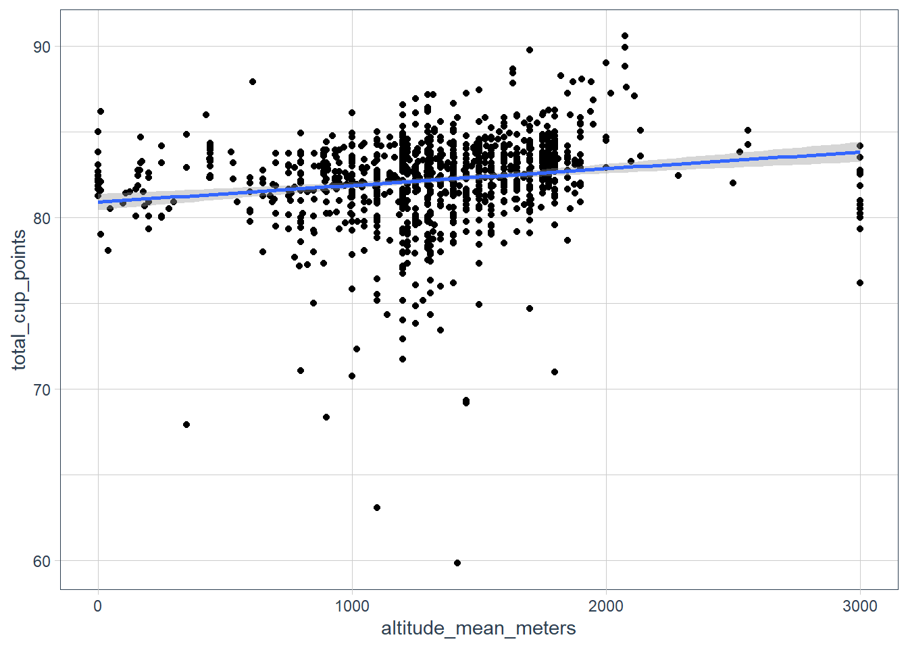
sessionInfo()R version 3.6.3 (2020-02-29)
Platform: x86_64-w64-mingw32/x64 (64-bit)
Running under: Windows 10 x64 (build 18363)
Matrix products: default
locale:
[1] LC_COLLATE=English_South Africa.1252 LC_CTYPE=English_South Africa.1252
[3] LC_MONETARY=English_South Africa.1252 LC_NUMERIC=C
[5] LC_TIME=English_South Africa.1252
attached base packages:
[1] stats graphics grDevices utils datasets methods base
other attached packages:
[1] tidytext_0.2.4 igraph_1.2.5
[3] ggraph_2.0.3 widyr_0.1.3
[5] ggridges_0.5.2 glue_1.4.1
[7] tidyquant_1.0.0 quantmod_0.4.17
[9] TTR_0.23-6 PerformanceAnalytics_2.0.4
[11] xts_0.12-0 zoo_1.8-7
[13] lubridate_1.7.8 magrittr_1.5
[15] forcats_0.5.0 stringr_1.4.0
[17] dplyr_1.0.0 purrr_0.3.4
[19] readr_1.3.1 tidyr_1.1.0
[21] tibble_3.0.1 ggplot2_3.3.0
[23] tidyverse_1.3.0 workflowr_1.6.2
loaded via a namespace (and not attached):
[1] nlme_3.1-144 fs_1.4.1 httr_1.4.1 rprojroot_1.3-2
[5] SnowballC_0.7.0 tools_3.6.3 backports_1.1.6 utf8_1.1.4
[9] R6_2.4.1 mgcv_1.8-31 DBI_1.1.0 colorspace_1.4-1
[13] withr_2.2.0 gridExtra_2.3 tidyselect_1.1.0 curl_4.3
[17] compiler_3.6.3 git2r_0.26.1 cli_2.0.2 rvest_0.3.5
[21] xml2_1.3.2 labeling_0.3 scales_1.1.0 quadprog_1.5-8
[25] digest_0.6.25 rmarkdown_2.1 pkgconfig_2.0.3 htmltools_0.4.0
[29] dbplyr_1.4.3 rlang_0.4.6 readxl_1.3.1 rstudioapi_0.11
[33] farver_2.0.3 generics_0.0.2 jsonlite_1.6.1 tokenizers_0.2.1
[37] Matrix_1.2-18 Rcpp_1.0.4.6 Quandl_2.10.0 munsell_0.5.0
[41] fansi_0.4.1 viridis_0.5.1 lifecycle_0.2.0 stringi_1.4.6
[45] whisker_0.4 yaml_2.2.1 MASS_7.3-51.6 plyr_1.8.6
[49] grid_3.6.3 ggrepel_0.8.2 promises_1.1.0 crayon_1.3.4
[53] lattice_0.20-38 splines_3.6.3 graphlayouts_0.7.0 haven_2.2.0
[57] hms_0.5.3 knitr_1.28 pillar_1.4.4 reshape2_1.4.4
[61] codetools_0.2-16 reprex_0.3.0 evaluate_0.14 modelr_0.1.6
[65] tweenr_1.0.1 vctrs_0.3.1 httpuv_1.5.2 cellranger_1.1.0
[69] polyclip_1.10-0 gtable_0.3.0 assertthat_0.2.1 ggforce_0.3.1
[73] xfun_0.13 broom_0.5.6 tidygraph_1.2.0 janeaustenr_0.1.5
[77] later_1.0.0 viridisLite_0.3.0 ellipsis_0.3.1